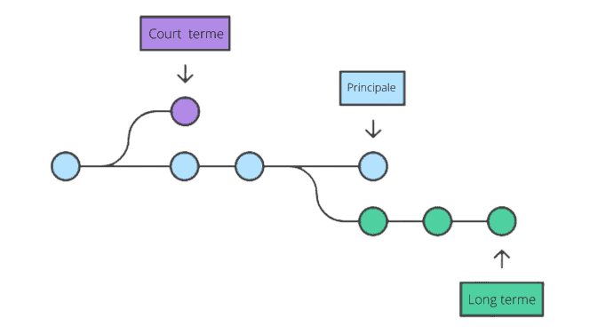
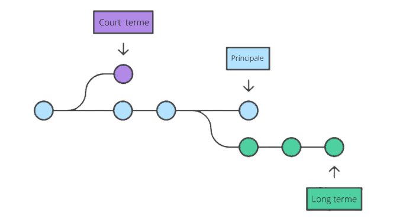

1)INTRODUCTION
Git est un logiciel de gestion de version qui va nous permettre d’enregistrer les modifications effectuées sur un projet et retourner à une version précédente du projet.
2)A quoi sert concrètement un système de gestion de version ?
L’intérêt des systèmes des gestions et de versions peut être résumé comme suit, enfaite si vous travaillez dans un groupe sur un projet vous devez assurer :
•Que les fonctionnalités sur lesquelles travaillent un développeur ne rentrent pas en conflit avec les autres fonctionnalités .
•Que chaque développeur sache sur quoi travaillent les autres développeurs.
•Que chaque développeur possède une version actualisée du site pour tester et implémenter ses fonctionnalités.
•Git permet à différentes versions d’un même fichier de coordonner le travail.
3)Les deux modèles des logiciels de gestion de version : modèle centralisé vs modèle décentralisé
Les logiciels de gestion de version sont tous construits sur l’un des deux modèles : le modèle centralisé ou le modèle décentralisé ou modèle distribué.
•Le principe d’un modèle centralisé est la centralisation du code source lié au projet.
•Dans un modèle distribué, le principe de base est opposé : le code source du projet est toujours hébergé sur un serveur distant .
•Le modèle distribué présente différents avantages par rapport au modèle centralisé :
• Simplicité / flexibilité du travail /Sécurité
4)le GITHUB
A-Qu’est-ce que GitHub?
GitHub est un service en ligne qui permet d’héberger des dépôts ou repo Git. C’est le plus grand hébergeur de dépôts Git du monde.

B-Utiliser Git :
On peut utiliser différents types d’interfaces pour utiliser Git TOUT COMME LA CONSOLE :
•Utiliser la ligne de commande est le seul moyen d’avoir accès à toutes les commandes Git .
•Toutes les personnes vont avoir accès aux mêmes commandes
•Si vous savez l’utiliser, vous saurez utiliser n’importe quelle autre interface graphique.
C-Installation de Git
La façon la plus simple d’installer Git est de télécharger et ouvrir la dernière version sur le site officiel http://git-scm.com/downloads , en laissant toutes les valeurs par défaut..
D-Paramétrage de Git
Une fois Git installé sur l'ordinateur, nous allons paramétrer le logiciel et renseigner un nom d’utilisateur et une adresse mail puis utiliser la commande git config .
E-Démarrer un dépôt Git :
Il existe deux façons de créer un dépôt Git :
•On peut importer un répertoire déjà existant dans Git.
•On peut cloner un dépôt Git déjà existant.
F-La gestion des informations selon Git
Git pense les données à la manière d’un “snapshots”, à chaque fois qu’on va valider ou enregistrer l’état d’un projet dans Git. Chaque instantané est stocké dans une base de données locale.
G-Les états des fichiers
Un fichier possède l’état “suivi” s’il appartenait au dernier instantané capturé par Git, si il est enregistré en base. Tout fichier qui n’appartenait pas au dernier instantané sera “non suivi”. Lorsqu’on démarre un dépôt Git en important un répertoire déjà existant depuis notre machine, les fichiers sont au départ tous non suivis, on demande à Git de valider l’ensemble des fichiers du projet. Un fichier est “validé” lorsqu’il est stocké dans la base de données locale.
Ensuite, chaque fichier suivi peut avoir l’un de ces trois états :
• Modifié (“modified”)• Indexé (“staged”)•Validé (“committed”)
Ensuite, les fichiers modifiés vont être considérés comme “modifiés” par Git.
On dit qu’on “indexe” un fichier lorsqu’on indique à Git que le fichier doit faire partie du prochain instantané dans sa version actuelle.
Enfin, lorsqu’on demande d’enregistrer en base l’état du projet actuel les fichiers faisant partie de l’instantané sont à nouveau considérés comme “validés” et le cycle peut recommencer.
 

H-Les zones de travail
Les états de fichiers sont liés à des zones de travail dans Git, un fichier va pouvoir apparaitre dans une zone de travail. Tout projet Git est composé de trois sections : le répertoire de travail (working tree), la zone d’index (staging area) et le répertoire Git (repository).
-working tree:
Le répertoire de travail ou “working tree” correspond à une extraction unique (“checkout”) d’une version du projet. Les fichiers sont extraits de la base de données compressée située dans le répertoire Git et sont placés sur le disque .
-staging area:
La zone d’index ou “staging area” correspond à un simple fichier, situé dans le répertoire Git, qui stocke les informations concernant ce qui fera partie du prochain instantané ou du prochain “commit”.
I-Créer un dépôt Git à partir d’un répertoire existant
Le répertoire Git est l’endroit où Git stocke les méta-données et la base de données des objets de votre projet. C’est la partie principale ou le coeur de Git.J-Cloner un dépôt Git
La deuxième façon de démarrer un dépôt Git est de cloner localement un dépôt Git déjà existant. Pour cela, on va utiliser la commande Git clone.
K-Ajouter ou modifier des fichiers:
A ce niveau, notre projet contenant un ensemble de fichiers et de ressources sur lesquelles on travaille ainsi qu’un dépôt Git .A chaque fois qu’on souhaite enregistrer une modification de fichier ou un ajout de fichier dans le dépôt Git, on va devoir utiliser les commandes git add et git commit .
L-Consulter l’historique des modifications Git
La manière la plus simple de consulter l’historique des modifications Git est d’utiliser la commande git log. Cette commande affiche la liste des commits réalisés du plus récent au plus ancien.
M-Annuler des modifications apportées à un fichier
L’un des principaux intérêts d’utiliser un logiciel de gestion de vision est de pouvoir “roll back”, On va pouvoir faire cela avec la commande générale git checkout -- nom-du-fichier ou la nouvelle commande spécialisée git restore.
N-Qu’est ce qu’une branche ?
Dans la plupart des systèmes de contrôle de version, une copie physique de la totalité du répertoire de travail est effectuée, ce qui rend la création de branches contraignante une opération lourde.
Git a une approche totalement différente des branches qui rend la création de nouvelles branches et la fusion de branche très facile à réaliser. Une branche, dans Git, est simplement un pointeur vers un commit
Un commit est un objet qui contient un pointeur vers l’instantané du contenu indexé ainsi que des pointeurs vers le ou les commits le précédant directement, Ainsi, créer une nouvelle branche dans Git crée simplement un nouveau pointeur plutôt que de recopier l’intégralité du répertoire de travail.
Cette partie a été crée par :
L’étudiante de la TEAM RESUME:
NOM: CHERIF
PRENOM: Sara
MATRICULE: 222231641414
DOMAINE: INFO 04 GROUPE 03
L’étudiante de la TEAM RESUME :
NOM: HADJIEDJ
PRENOM: Amel Hiba
MATRICULE: 212231438205
DOMAINE: INFO 04 GROUPE 03